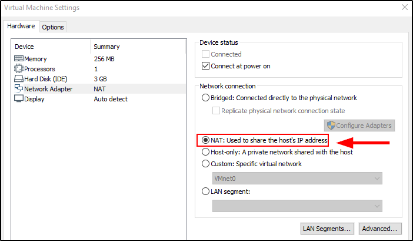
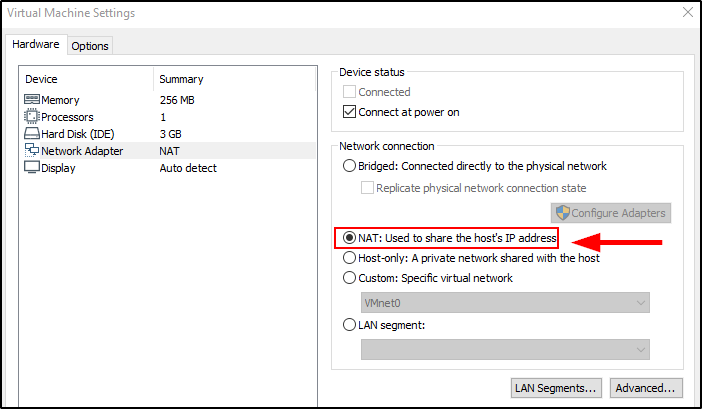
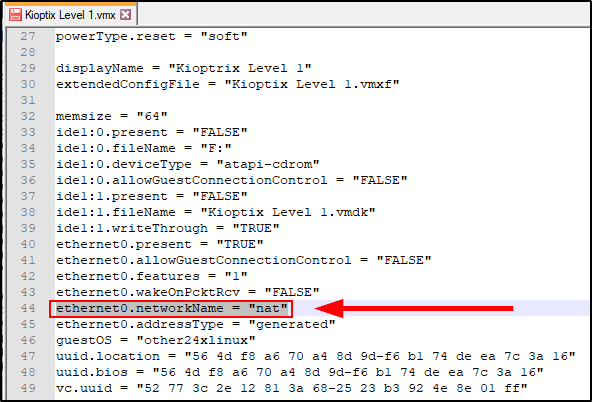

Kioptrix: Level 1
The vulnerable machine, useful for testing.
https://www.vulnhub.com/entry/kioptrix-level-1-1,22/
(Other boxes for OSCP: https://www.abatchy.com/2017/02/oscp-like-vulnhub-vms)
Now, use VMware or VirtualBox to set its interface to NAT and change its configuration file:
Search for "ethernet0.networkName" and change from “Bridged” to “nat”

 

